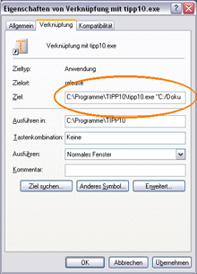
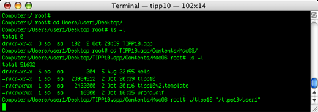

Einführung | Inhaltsverzeichnis | Installation
Einführung | Inhaltsverzeichnis | Installation 
2. Merkmale von TIPP10
2.1 Programmeigenschaften
2.1.1 Intelligente Übungslektionen
Die Texte der Lektionen reagieren individuell auf Ihre Tippfehler. Häufig falsch getippte Buchstaben werden sofort intensiver wiederholt als richtig getippte Zeichen. Dieses System ermöglicht Ihnen, Tippfehler schnell in den Griff zu bekommen und das Zehnfingersystem effizient und fehlerfrei zu erlernen. Zudem verspricht es Ihnen Abwechslung, da kein Diktat dem anderen gleicht.
20 aufeinander aufbauende Übungslektionen gewöhnen Sie schrittweise an alle Tasten der Tastatur. Im Sprachgebrauch häufig verwendete Schriftzeichen erlernen Sie dabei früher und häufiger, als selten verwendete Schriftzeichen.
2.1.2 Laufschrift und virtuelle Hilfetastatur
Ein in der Schriftart, der Geschwindigkeit und farblich einstellbares Laufband ermöglicht Ihnen kontinuierlichen Schreibfluss. Farbig angezeigte Tasten und Tastwege auf einer virtuellen Tastatur unterstützen Sie bei der korrekten Benutzung der verschiedenen Finger und der Einhaltung der Grundstellung. Zusätzlich werden die zu verwendenden Finger in einer Statusleiste erklärt und Informationen über Fehlerzahl und Anschläge pro Minute angezeigt.
2.1.3 Lernstatistik
Nach jedem Schreibtraining erhalten Sie einen ausführlichen und druckbaren Bericht, der die absolvierte Lektion bewertet. Eine Auflistung aller vollzogenen Lektionen mit Informationen über Dauer, Fehlerzahl, Anschläge pro Minute und einer Bewertung gibt Ihnen Auskunft über Ihre vollbrachten Leistungen. Ein Verlaufsdiagramm der Lektionen zeigt Ihren Fortschritt und lässt Sie Ihre Leistungen individuell vergleichen. Zusätzlich zeigt Ihnen TIPP10 die Fehlerquoten aller im Schreibtraining verwendeten Schriftzeichen und Finger an. So sehen Sie sofort, welche Zeichen und Finger Ihnen noch Schwierigkeiten bereiten.
2.1.4 Freie und eigene Lektionen
Wenn Sie das Zehnfingersystem schon etwas beherrschen und sich vor allem in Punkto Fehlerquote und Schreibgeschwindigkeit verbessern wollen, können Sie auch freie und eigene Lektionen absolvieren. Freie Lektionen bieten Diktate zu bestimmten Themen. Auf diese Weise lassen sich gezielt bestimmte Texteigenschaften trainieren, wie sie z.B. beim Programmieren oder in Gesetzestexten vorkommen. Eigene Lektionen dienen dagegen dazu, selbst erstellten Text in den Schreibtrainer TIPP10 zu laden, um sich diesen anschließend diktieren zu lassen.
2.1.5 Umfangreiche Anpassungsmöglichkeiten
Sie können selbst festlegen, wie eine Lektion gesteuert wird. So lässt sich die Dauer der Lektion individuell festlegen, das Verhalten des Schreibtrainers auf Tippfehler bestimmen und welche visuellen Hilfestellungen Sie bei dem Schreibtraining unterstützen sollen. In den Grundeinstellungen der Software lassen sich zudem weitere Anpassungen vornehmen, falls Sie beispielsweise eine andere Geschwindigkeit des Laufbands oder eine größere Schrift bevorzugen.
2.1.6 Plattformunabhängig und mehrsprachig
TIPP10 ist für die Betriebsysteme Windows, Mac OS X und diverse Linuxdistributionen verfügbar. Die Software wird derzeit in den Sprachen Deutsch und Englisch angeboten, außerdem können Sie zwischen verschiedenen Tastaturlayouts wählen. Neben dem deutschen Tastaturlayout, kann auch das Layout der Schweiz, das Layout der USA oder die alternativen Tastaturlayouts NEO, Dvorak und RISTOME aktiviert werden. Die Sprache der Programmoberfläche, die Sprache der Lektionen und das Tastaturlayout können getrennt voneinander eingestellt werden.
2.2 Systemanforderungen
Um TIPP10 verwenden zu können, benötigen Sie einen herkömmlichen Computer mit einem Windows-, Macintosh- oder Linux-Betriebsystem.
Unterstützt werden
- Windows 98, 2000, XP, Vista und 7
- Mac OS X Version 10.3.x oder höher (PPC- oder Intelprozessor)
- diverse Linux-Distributionen (Ubuntu, Kubuntu, OpenSuse, Puppy, Redhat, u.a.)
Da die dynamische Erstellung der Lektionen zur Laufzeit zusätzliche Rechenzeit benötigt, sollte der Computer über ausreichend Arbeitsspeicher (mindestens 64 MB) und Prozessorleistung (mindestens 800 Mhz) verfügen. Zudem sollte Ihre Grafikkarte und Ihr Monitor mindestens 16 Millionen Farben (16 Bit) und eine Auflösung von mindestens 800x600 Pixel darstellen können.
2.3 Benutzer und ihre Daten
2.3.1 Vorwort
Das Thema Benutzerverwaltung wird von den TIPP10-Benutzern immer wieder angesprochen. Version 1 speicherte die Daten des Benutzers noch in einer Datenbank (tipp10.db), die sich im Programmverzeichnis von TIPP10 befand. Dies hatte den Nachteil, dass TIPP10 eigentlich nur von einer Person pro Computer benutzt werden konnte. Es wurde immer die gleiche Datenbank verwendet, obwohl Lektionen, Fehlerquoten und somit die Anpassung des Diktats pro Benutzer anders ausfallen. Zudem machte diese Art der Verwaltung auch Probleme, wenn TIPP10 im Netzwerk eingesetzt wurde, da oftmals keine Schreibrechte für das Programmverzeichnis vorhanden waren.
Daher wurde zuerst die Möglichkeit in Betracht gezogen, eine einfache und anwenderfreundliche Benutzerverwaltung mit Anmeldung zu integrieren. Leider entstehen durch eine Anmeldung zahlreiche weitere Anforderungen an die Software. So muss eine Benutzerverwaltung existieren, mit der einzelne Benutzer geändert und gelöscht werden können, zudem wird die Weiterentwicklung und Aktualisierungsmöglichkeit von Software und Datenbank durch die Benutzerführung deutlich erschwert.
TIPP10 soll ein schlichtes und einfach zu bedienendes Programm bleiben. Da der Großteil aller Benutzer von TIPP10 nur mit einem Account pro Computer arbeitet, wurde seit Version 2.0 zu folgenden Alternativen gegriffen, um die Datenbank zu handhaben:
2.3.2 Portable Version (Windows)
Die portable Version von TIPP10 speichert die Daten direkt im Programmverzeichnis ab und kann daher immer nur von einer Person verwendet werden. Dafür bietet Sie aber den Vorteil der portablen Nutzung und kann so ohne Datenverlust z.B. mit Hilfe eines USB-Sticks auf verschiedenen Computern gestartet werden.
Die Datenbank tipp10v2.db mit den Benutzerdaten und die Datei settings.ini mit den gewählten Programmeinstellungen ist bei der portablen Version unter folgendem Pfad zu finden:
Programmverzeichnis\portable\
Das Verzeichnis portable wird beim ersten Programmstart automatisch erzeugt.
2.3.3 Installierbare Version (Windows, Mac OS, Linux)
Die installierbare Version von TIPP10 erzeugt beim ersten Programmstart eine neue Datenbank tipp10v2.db im HOME-Verzeichnis des Benutzers.
Bei Windows ist das Verzeichnis normalerweise unter folgendem Pfad zu finden:
C:\Dokumente und Einstellungen\Benutzername\Anwendungsdaten\TIPP10\
Bei MacOS ist das Verzeichnis normalerweise unter folgendem Pfad zu finden:
/Users/Benutzername/Library/Application Support/TIPP10/
Bei Linux ist das Verzeichnis normalerweise unter folgendem Pfad zu finden:
/home/Benutzername/TIPP10/
Im Ordner TIPP10 liegt dann die Datenbank tipp10v2.db. Anschließend kann bei Bedarf der Pfad zur Datenbank in den Grundeinstellungen von TIPP10 angepasst werden.
Die Vorteile dieser Art der Datenbankverwaltung:
1. Der "normale" TIPP10-Nutzer mit einem eigenen Computer und einem Account kann TIPP10 wie gewohnt nutzen, zudem kann er den Speicherort der Datenbank (z.B. für Datensicherungen) individuell festlegen.
2. Schulen oder andere Institutionen mit vielen Benutzeraccounts pro Computer, jedoch ohne zentralen Dateiserver, können TIPP10 gemeinsam nutzen. Für jeden Benutzer, der das Programm aufruft, wird automatisch eine individuelle Datenbank im jeweiligen HOME-Verzeichnis angelegt.
3. Die Nutzung von TIPP10 im Netzwerk ist auch ohne Probleme möglich. Das ausführbare Programm wird vom Dateiserver zur Verfügung gestellt, die Datenbank aber auf dem Client erzeugt und verwendet. Auf diese Weise bestehen Schreibrechte auf die Datenbank und der relativ hohe Datentransfer zur Datenbank (bedingt durch die Intelligenzfunktion) kann vollständig vom Client übernommen werden.
Leider wird aber durch diese Art der Datenbankverwaltung eine Benutzer-Klientel ausgesperrt, und zwar mehrere Personen die einen Computer mit nur einem Benutzeraccount verwenden. Aber auch hierfür gibt es eine Lösung:
2.3.4 Parameterübergabe des Datenbankpfads
TIPP10 kann mit Hilfe eines Parameters aufgerufen werden, der dem Programm einen aktuellen Datenbankpfad übermittelt. So ist es möglich, für jeden Benutzer eine Programmverknüpfung mit eigenem Datenbankpfad anzulegen.
Unter Windows sollten Sie dazu eine neue Verknüpfung zu der Datei tipp10.exe erstellen. In den Eigenschaften der Verknüpfung können Sie dann den Pfad als Programmparameter eingeben.

Beispieleingabe unter Windows:
"C:\Programme\TIPP10\tipp10.exe" "C:/tipp10/user1"
Beachten Sie dabei unbedingt:
1. Befehl und Parameter sollten in Anführungszeichen gefasst werden
2. der Pfad wird mit normalen Schrägstrichen (Slash: /) angegeben
3. der Pfad gibt das Verzeichnis zur Datenbank an und nicht die Datenbank-Datei selbst
4. der Pfad endet ohne Schrägstrich (Slash)
Unter MacOS geben Sie den Parameter hinter den Programmaufruf über das Terminal ein, also z.B.:
./tipp10 "/tipp10/user1"

Auch unter Linux geben Sie den Parameter einfach hinter den Programmaufruf in das Terminal ein, also z.B.:
./tipp10 "/tipp10/user1"
In dem Verzeichnis user1 wird beim ersten Programmaufruf über die Verknüpfung automatisch eine neue Datenbank erzeugt. Beachten Sie aber unbedingt, dass das Verzeichnis bereits existieren muss!
 Einführung | Inhaltsverzeichnis | Installation
Einführung | Inhaltsverzeichnis | Installation 
© 2006-2011 Tom Thielicke IT Solutions